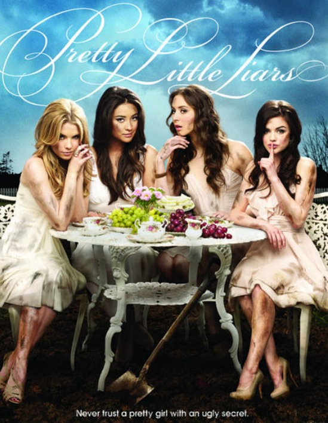
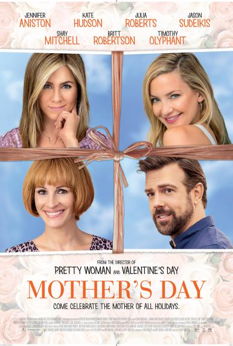

Shay's Street Cred
Filmography
- Pretty Little Liars, Role of "Emily Fields," 2010 - Present

- Mother's Day, Role of "Tina," 2016

Social Media Stats
- Twitter: 3.27 million followers
- Instagram: 12 million followers
- YouTube: 1.23 million subscribers
Fun Facts
- Born Shannon Mitchell
- Half-Filipina, Half-Irish/Scottish
- National spokesperson for Pantene Pro-V Nature Fusion collection
- Ambassador to the Somaly Mam Foundation